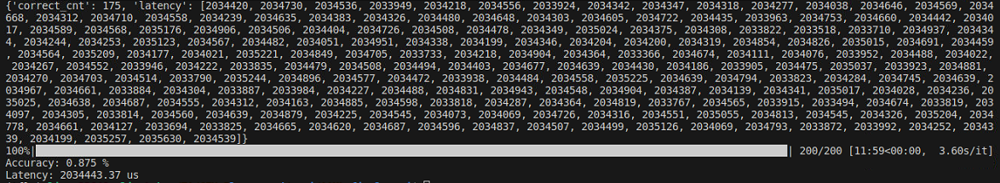

Final Project: Pruned Wav2Letter#
Introduction#
In this final project, you are required to design a CFU to accelerate the Wav2Letter model for automatic speech recognition (ASR) tasks. The primary goal is to minimize inference latency (cycle count) while maintaining the model’s accuracy.
Selected Model#
We use a quantized version of the Wav2Letter architecture. The default implementation, provided by Arm, is pruned to 50% sparsity and quantized using the TensorFlow Model Optimization Toolkit.
You don’t need to integrate the model yourself; it is already included in the CFU template. You can inspect the model architecture using Netron. It might provide you some inspiration for your design.
Note
The model takes a long time (~30 minutes) to inference the full evaluation dataset using the pure software implementation. Please start your project as soon as possible.
Setup#
Clone the Final Project Template#
$ cd ${CFU_ROOT}/proj
$ git clone https://github.com/nycu-caslab/AAML-2025-Project.git
Prepare the Model File#
Download the original Wav2Letter tflite model:
$ cd AAML-2025-Project/src/wav2letter/model
$ wget https://github.com/ARM-software/ML-Zoo/raw/master/models/speech_recognition/wav2letter/tflite_pruned_int8/wav2letter_pruned_int8.tflite
Then convert the tflite file into a header file:
$ chmod +x model_convert.sh
$ ./model_convert.sh
Python Dependencies#
$ pip install numpy pyserial tqdm jiwer
Requirements#
Files#
Modifiable files
src/tensorflow/lite/kernels/internal/reference/integer_ops/conv.hsrc/tensorflow/lite/kernels/internal/reference/leaky_relu.hcfu.vThe
.tflitemodel file and the generated header file. (Only if you modify the architecture)
Custom files
You can add any files you need to improve your design.
Important
DO NOT MODIFY any other source code in ${CFU_ROOT}/common/** and ${CFU_ROOT}/third_party/** unless permitted.
Architecture#
You can modify the model architecture. But your accuracy can not be less than 72% (see Grading Policy).
Important
You are NOT ALLOWED to retrain the model on the provided test dataset (overfitting). You must ensure your model generalizes well to unseen audio. If we find this situation happened, you will receive 0 points on the final project.
Golden Test#
You can use the golden test to verify if your implementation gives the same results as the original model.
How to run:
make prog && make loadPress
3>w>gto run the golden test. The result should be like:
Performance#
We use a provided Python script to evaluate your design.
Steps:
make prog && make loadReboot the LiteX.
Close the litex-term terminal (Critical! To free up the UART port).
Run the script:
$ python eval.py --port /dev/ttyUSB1 (or any serial you are using)
The result should be like:

You need to minimize the latency as low as it could be.
Tip
If you just want to check the latency of your design, it would be easier to run a test input instead of whole process of evaluation.
Presentation#
You should give a presentation in the last class of this semester.
Time Limit: At most 5 minutes per team.
Content:
Introduction: Strategy for SW profiling & HW architecture.
Implementation: Details of your CFU & kernel optimizations.
Evaluation: Final accuracy & latency.
Important
You will receive a 30-point deduction if you do not present your work.
Grading Policy#
We will compare your performances against the TA’s reference design (simply the SIMD in lab 2) and will not be released.
Ranking: A leaderboard will be released after the deadline.
Grading Formula#
Accuracy#
Note
Better accuracy (e.g., 90%) does NOT give you a higher score.
Latency#
Presentation#
Final score#
Submission#
Please fork the repo and push your work to it.
If you use a custom model architecture, you MUST follow these steps:
Explicitly state in README.md that you are using a custom model.
Upload your modified
.tflitefile and the converted.hfile undersrc/wav2letter/model.Also upload your training/modification scripts (if any) in the repo for verification.
Fill in your repo link and your presentation slides link to the spreadsheet before the deadline.
Grading workflow will be:
Clone your repo.
Apply your custom model (if specified in README).
make prog && make loadRun the evaluation script.
Record the metrics.